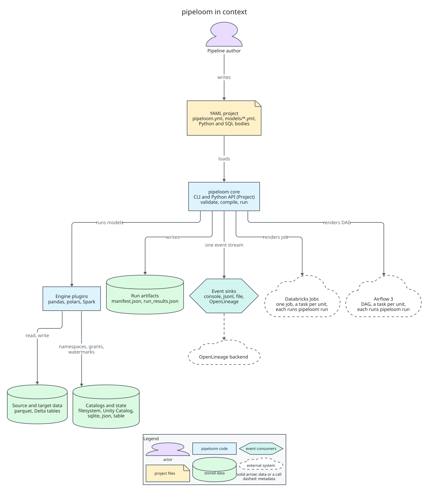
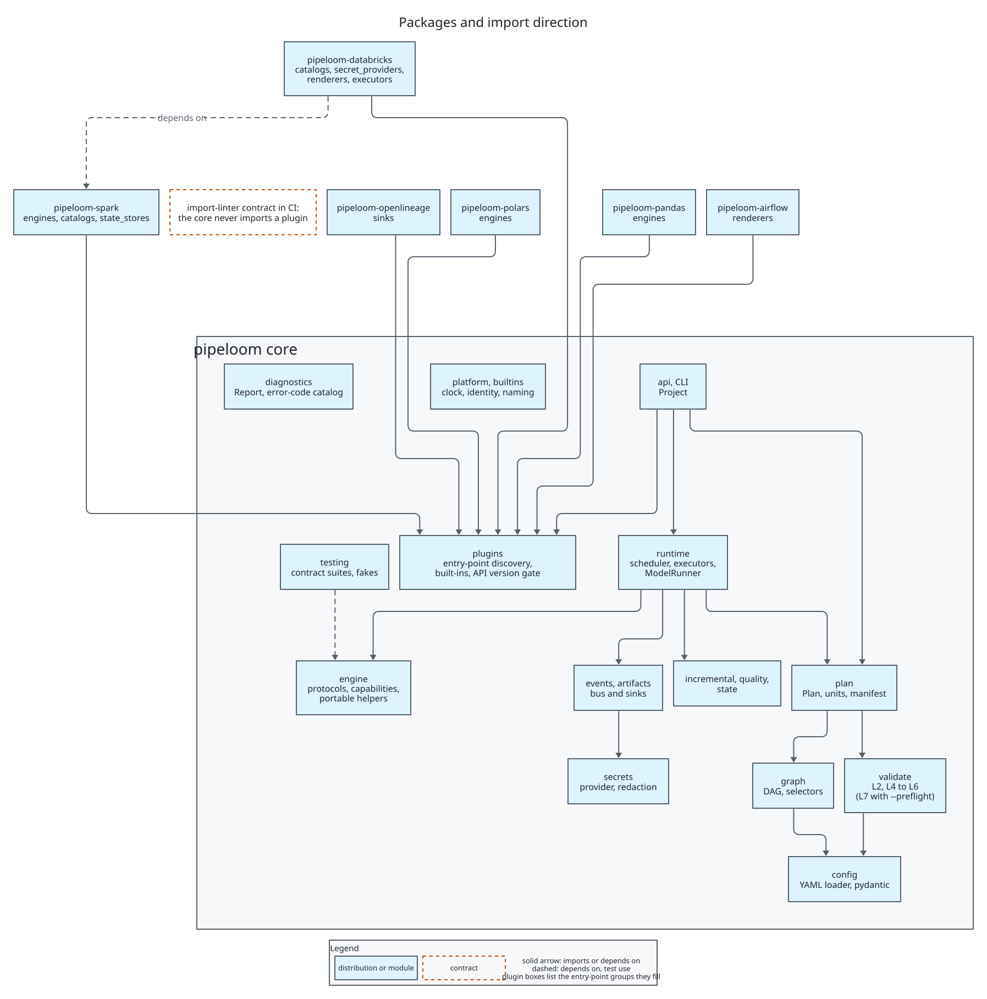
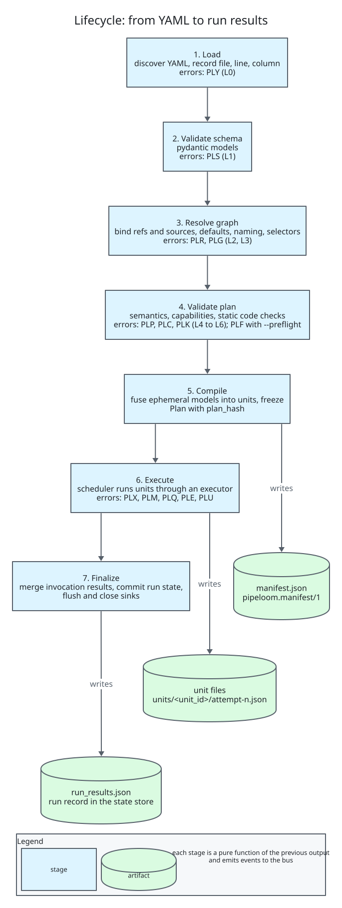
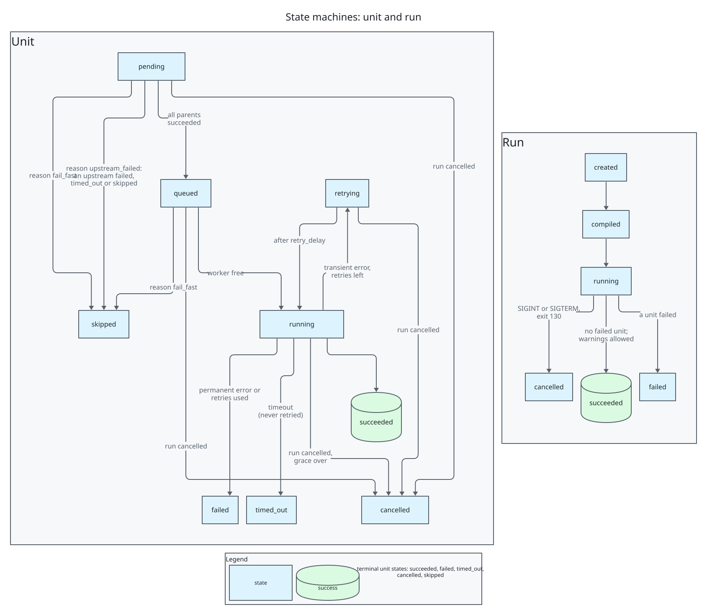
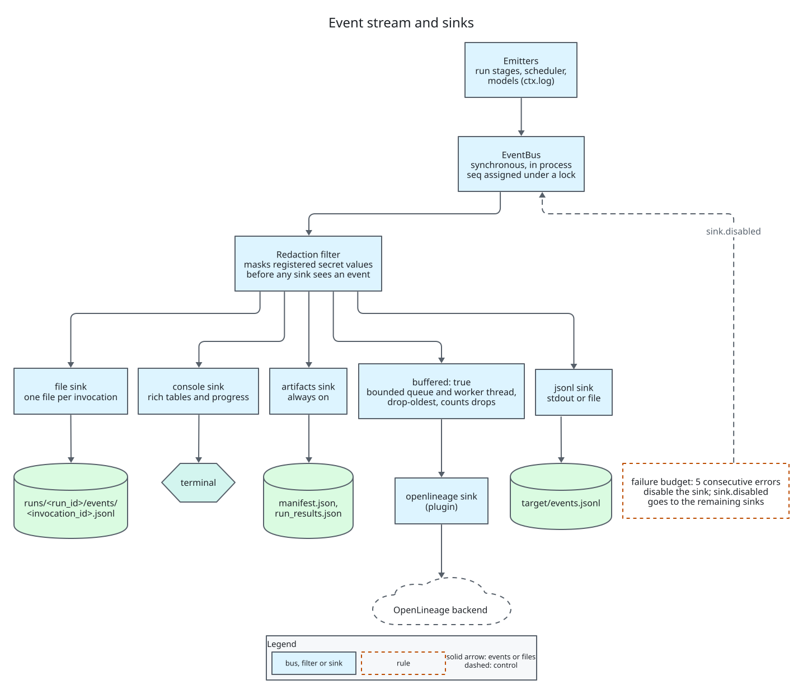
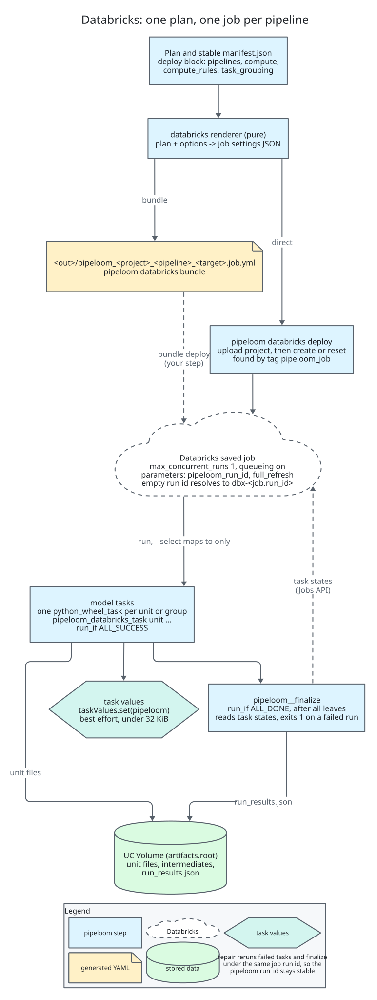
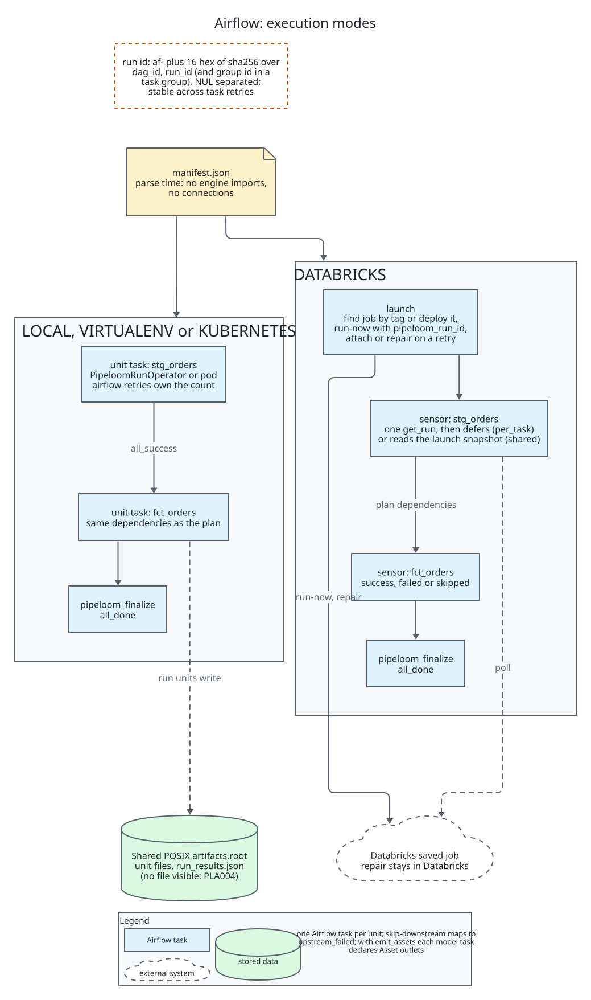

pipeloom architecture¶
Status: 0.4 implements everything up to 0.3 (the scheduler, the polars and pandas engines, incremental models, merge and replace_partitions, expectations and quarantine, retries, timeouts, cancellation) plus the
pipeloom-sparkengine with Delta writes, intermediates and thetablestate store. The Databricks and Airflow integrations are designed here and arrive in later versions (section 16). Decisions are recorded as ADRs in adr/. Diagrams are D2 sources in diagrams/ with committed SVGs.
1. Vision, goals, non-goals, principles¶
Vision. A small, typed framework. Pipelines are declared in YAML and compiled into an immutable plan. That plan runs the same way on pandas, polars, PySpark or later engines, and runs locally, as one Databricks job, or as an Airflow DAG. Every run produces a single event stream and artifacts you can query.
Goals: declarative YAML with layered validation and editor completion; an engine-agnostic core with one plugin per tool; end-to-end events and styled logs; persisted metadata for each run and each model; a Databricks one-job renderer; a cosmos-style Airflow integration; open-source hygiene.
Non-goals (through 1.0): streaming; a scheduler service or UI; a portable SQL dialect; Jinja templating; running user code at compile time; Airflow 2 support.
Principles. Each answers a lesson (L) from the concept spec.
1. One event stream. Logs, metrics, artifacts and lineage subscribe to it (L1).
2. Dependencies are declared, never traced. Tracing is an opt-in static check that warns (L2).
3. No module-level registries. A Project object owns plugins and config (L3).
4. Docs, the CLI reference, the JSON Schema and the error catalog are all generated from code. Every CLI flag has a test (L4).
5. No session-global mutation. Every engine setting lives in a context manager with guaranteed cleanup. Metrics never depend on global commit tags (L5, L10).
6. Ready-queue scheduling with no level barriers (L6).
7. Execution units never share in-memory state. Ephemeral models are inlined; intermediates are persisted (L7).
8. Maintenance operations (compaction, clustering) run only when declared (L8).
9. Each declared write option is either applied by every strategy or rejected at validation (L9).
10. Platform behavior is injected: clock, identity, catalog, secrets (L11).
11. Incremental logic is a declared key plus a lookback, with a watermark store (L12).
12. Retries, timeouts, data quality, persisted metadata, selectors, schema-change policy, SCD2 and deletes are all first-class (L13).
13. YAML first, with JSON Schema (L14).
2. Glossary¶
- Project: a directory with
pipeloom.ymland model files. - Model: a named dataset built from declared inputs by a Python callable or a SQL body.
- Source: an external dataset declared in YAML.
- Target: a named runtime environment (engine, catalog, naming, state store).
- Materialization:
table,incremental,view,ephemeralorintermediate. - Write strategy:
append,overwrite,replace_partitions,mergeorscd2. - Plan: an immutable compiled graph of resolved models.
- Execution unit: one schedulable node of the plan. It holds one persisted model plus any ephemeral models inlined into it.
- Boundary:
process(all units in one process) ortask(each unit in its own process or orchestrator task). - Manifest: the serialized plan (
manifest.json). - Run: one execution of a plan, identified by
run_id. - Invocation: one process taking part in a run.
- Attempt: one try of a unit.
- Watermark: the high-water value of an incremental key.
- Expectation: a data-quality rule with
warn,droporfail. - Sink: an event subscriber.
- Renderer: turns a plan into an orchestrator artifact.
- Executor: runs units.
- Plugin API version: the version of the protocol contract between the core and plugins.
3. Architecture overview¶

Source: 01-context.d2.
Layers. Arrows point toward dependencies. The core never imports a plugin, and an import-linter contract enforces this in CI.
CLI / Python API (pipeloom.api.Project)
├─ diagnostics Diagnostic, Report, Outcome and the error-code catalog (`pipeloom.diagnostics.codes`); a leaf package
├─ platform Clock and Identity seams
├─ config YAML loader with line marks, pydantic models, defaults resolution, target binding, schema export
├─ validate L2 references, L4 plan semantics, L5 capabilities, L6 static code (L0-L1 live in config, L3 in graph)
├─ graph DAG, selectors, topological order, cycle paths
├─ plan Plan, ExecutionUnit, Manifest, plan_hash
├─ runtime Scheduler, Executor(thread|process), ModelRunner, ModelContext
├─ engine protocols, logical types, capabilities, portable helpers (Narwhals)
├─ incremental / quality / state
├─ events Event models, EventBus, console/jsonl/file sinks
├─ artifacts manifest.json, run_results.json writers
├─ secrets env provider, interpolation, redaction
├─ plugins entry-point discovery, built-in table, API-version gate
├─ builtins naming strategies, filesystem catalog spec, env secret provider
└─ testing contract suites, RecordingSink, FakeClock, MemoryEngine
Plugins: pipeloom-pandas | -polars | -spark (0.4) | planned: -databricks | -airflow | -openlineage
pipeloom-spark depends only on pipeloom. pyspark is not a dependency of it: the extra local brings pyspark[connect] and delta-spark, and pipeloom[spark] pulls pipeloom-spark[local] (ADR-0031). Databricks runtimes and Databricks Connect ship their own pyspark, so there the plugin is installed without extras.

Source: 02-packages.d2.
Lifecycle. Each stage is a pure function from the previous stage's output. Every stage emits events.
- Load: discover YAML files, then parse them while recording file, line and column for every node.
- Validate schema: pydantic models (L0-L1).
- Resolve graph: bind refs and sources, apply defaults and precedence, apply naming strategies to get physical names, apply selectors (L2-L3).
- Validate plan: semantics, plugin capabilities and static code checks (L4-L6).
- Compile: fuse ephemeral models into units for the chosen boundary, then freeze. Output is
Planplusmanifest.jsonwith aplan_hash(sha256 of the canonical JSON of nodes, sources, units, edges and the project, target, boundary and config version; selection, versions, timestamps and ids are excluded). - Execute: the scheduler runs units through an executor. Orchestrated tasks run
pipeloom run --manifest ... --select unit:<id> --expect-plan-hash <h>. - Finalize: merge per-invocation results, write
run_results.json, commit run state, flush and close sinks.

Source: 03-lifecycle.d2.
4. Configuration¶
Project file.
# yaml-language-server: $schema=https://emanuel-luis.github.io/pipeloom/latest/schema/v1/project.json
config_version: 1
name: shop
model_paths: [models]
python_paths: [src] # added to sys.path at execution only
vars: {country: BR}
defaults:
models: {materialized: table, retries: 1, timeout: 30m}
targets:
dev:
engine: {kind: polars}
catalog: {kind: filesystem, root: ./warehouse}
naming: {kind: per_user}
state: {kind: sqlite, path: .pipeloom/state.db}
workers: 4
prod:
engine: {kind: spark}
catalog: {kind: unity, catalog: main}
naming: {kind: prefix, schema_prefix: prod_}
state: {kind: table, table: ops._pipeloom_state}
artifacts: {root: /Volumes/main/ops/pipeloom}
deploy: # 0.5: a plugin block, validated against `renderers`
kind: databricks
pipelines: {main: {}, daily: {select: ["tag:daily"]}}
compute: {default: {kind: serverless, environment_version: "5"}}
task_grouping: none
events:
sinks:
- {kind: console}
- {kind: jsonl, path: target/events.jsonl, failure_budget: 5}
Model files. Any *.yml under model_paths.
sources:
- {name: raw_orders, format: parquet, location: data/raw/orders/}
models:
- name: stg_orders
sql: |
select order_id, customer_id, amount, updated_at from raw_orders
inputs: {raw_orders: {source: raw_orders}}
- name: fct_orders
python: shop.marts.orders:build # module:function
inputs:
orders: {ref: stg_orders}
customers: {ref: dim_customers}
materialized: incremental
incremental: {input: orders, column: updated_at, lookback: 2d}
write: {strategy: merge, unique_key: [order_id], on_schema_change: append_new_columns}
partition_by: [order_date]
expectations:
- {name: amount_non_negative, check: {range: {column: amount, min: 0}}, on_violation: drop}
tags: [finance, daily]
_defaults.yml files set folder-level defaults. They cascade from the model's own folder up to its model_paths root, nearest first; mappings merge deeply, lists replace and tags is an ordered union without duplicates.
ADR-0003: Model authoring.
- Context: L2 and L14 require declared dependencies and YAML validation. Users still need a real transformation language.
- Options: YAML-only (too weak for transformations), YAML plus Python, YAML plus SQL, or YAML plus both.
- Choice: YAML declares every model. The body is either a Python callable or a SQL body. The inputs map binds local aliases to ref or source.
- A Python callable is called as build(ctx, **inputs). Each alias becomes a keyword argument holding a relation.
- SQL refers to aliases as table names. The engine registers them as named relations for that query only.
- At compile time pipeloom imports nothing from the project. L6 parses the callable's file with ast to check that the function exists and that its parameters equal ctx plus the input aliases.
- Opt-in SQL table-reference checking via the sqlglot extra warns on mismatch.
- Consequences: graphs are cheap to build, so Airflow can parse DAG files safely. No Jinja. Reads of undeclared tables through ctx.engine.native are a documented escape hatch outside lineage.
JSON Schema. pipeloom schema export --out schemas/ writes project.json, models.json and defaults.json (draft 2020-12) from the pydantic models.
- Plugin option models (engine, catalog, sink, state) are composed as oneOf branches on kind, using the plugins that are installed (--plugins builtin limits it to the built-ins).
- The docs site publishes the schemas of the built-in plugins under latest/schema/v1/ (and under each version folder).
- The modeline above enables completion in editors that use yaml-language-server.
Precedence.
- Runtime settings (highest first): CLI flags; PIPELOOM_* environment variables (for example PIPELOOM_TARGET, PIPELOOM_WORKERS); an optional git-ignored user file ~/.pipeloom/profiles.yml with per-target overrides; the targets.<t> block; then top-level project keys.
- Model config: the model entry; _defaults.yml files from the nearest folder up to the model_paths root; then defaults.models; then built-in defaults.
- Targets may change runtime keys only (engine options, catalog, naming, state, workers, artifacts, deploy). deploy is a runtime key like the others: the target block wins over the top-level one. The core validates its options with the config_model of the renderers plugin it names (the factory is never called), records them in the manifest as metadata.deploy (not part of the plan hash) and resolves nothing in them at runtime except ${secret:...} references in plugin options. They may not change model semantics, so plans differ across targets only in physical names and runtime settings.
- Interpolation: ${env:NAME}, ${env:NAME:-default} and ${var:name} resolve at compile time and are recorded in the manifest. ${secret:provider/path} resolves only at runtime (section 14).
5. Core protocols¶
from typing import Any, Protocol, Mapping, Sequence, Iterator, ContextManager
from dataclasses import dataclass
from datetime import datetime
@dataclass(frozen=True)
class Column: name: str; dtype: str; nullable: bool = True # logical type: int64, decimal(18,2), timestamp[UTC]...
Schema = tuple[Column, ...]
@dataclass(frozen=True)
class Relation: # opaque handle; never inspected by core
native: Any # pandas/polars frame, Spark DataFrame...
engine: str
lazy: bool
@dataclass(frozen=True)
class EngineCapabilities:
formats: frozenset[str]; strategies: frozenset[str]
sql_models: bool; views: bool; idempotent_writes: bool
cancel: bool; bytes_metrics: bool; portable: bool # Narwhals-compatible frames
quality: bool # evaluate and apply_drops (0.3)
materializations: frozenset[str] # table, view, ephemeral (0.2)
@dataclass(frozen=True)
class StateStoreCapabilities: shared: bool # visible to every process and task of a run
class Engine(Protocol):
name: str
version: str # recorded as engine_version in run_results
capabilities: EngineCapabilities
def session(self, ctx: "RuntimeContext", *, catalog: "Catalog") -> ContextManager["EngineSession"]: ... # one per invocation, thread-safe, cleanup guaranteed (L10)
class EngineSession(Protocol):
native: Any # escape hatch
def reader(self, fmt: str) -> "Reader": ...
def materializer(self, strategy: str) -> "Materializer": ...
def sql(self, query: str, inputs: Mapping[str, Relation]) -> Relation: ...
def schema(self, rel: Relation) -> Schema: ...
def count(self, rel: Relation) -> int: ...
def filter_since(self, rel: Relation, column: str, lower: Any, *, inclusive: bool = True) -> Relation: ... # strict (>) when not inclusive
def relation(self, native: Any) -> Relation: ... # check a model's return value and wrap it; TypeError for a foreign type
def persist(self, rel: Relation) -> Relation: ... # in-memory copy for results shared by several units
def create_view(self, target: "TargetRef", query: str, inputs: Mapping[str, "ReadSpec"]) -> "WriteResult": ... # catalog view, never a session view
def max_value(self, rel: Relation, column: str) -> Any: ... # a plain Python value, never numpy or pandas
def evaluate(self, rel: Relation, checks: Sequence["ExpectationSpec"]) -> "QualityCounts": ... # raw counts; the core judges
def apply_drops(self, rel: Relation, checks: Sequence["ExpectationSpec"], *, quarantine: "QuarantineMeta | None") -> "DropResult": ...
def align(self, rel: Relation, schema: Schema) -> Relation: ... # schema order, missing columns as typed nulls, cast
def write_intermediate(self, rel: Relation, ref: "IntermediateRef", token: str) -> "WriteResult": ... # overwrite at ref.location; a repeated token writes nothing (0.4)
def applied_token(self, target: "TargetRef", token: str) -> "WriteResult | None": ... # stored result with skipped=True
def unit_scope(self, unit_id: str) -> ContextManager[None]: ... # tags this thread's work so cancel can find it
def is_transient(self, exc: BaseException) -> bool | None: ... # True retryable, False permanent, None no opinion
def cancel(self, unit_id: str) -> None: ... # cooperative; no-op if not capable
class Reader(Protocol):
def read(self, spec: "ReadSpec") -> Relation: ... # source or upstream target
class Writer(Protocol): # format-level primitive
def write(self, rel: Relation, target: "TargetRef", mode: str, opts: "WriteOptions") -> None: ...
class Materializer(Protocol): # one per strategy
strategy: str
def materialize(self, rel: Relation, target: "TargetRef", cfg: "WriteConfig",
token: str) -> "WriteResult": ... # token = idempotency key; cfg.run_started_at = the run's start (the session opens before it is resolved)
class Catalog(Protocol):
def exists(self, target: "TargetRef") -> bool: ...
def ensure_namespace(self, ns: "Namespace") -> None: ... # idempotent, cached per invocation
def table_schema(self, target: "TargetRef") -> Schema | None: ...
def apply_grants(self, target: "TargetRef", grants: Sequence["Grant"]) -> None: ...
def maintain(self, target: "TargetRef", ops: Sequence["MaintenanceOp"]) -> None: ... # explicit (L8)
class MetricsProvider(Protocol): # plugin-internal since 0.4: not part of the core API
def before_write(self, target: "TargetRef") -> "MetricsToken": ...
def after_write(self, target: "TargetRef", token: "MetricsToken", result: "WriteResult") -> "WriteMetrics": ...
class StateStore(Protocol):
def get_watermark(self, key: "StateKey") -> "Watermark | None": ...
def cas_watermark(self, key: "StateKey", expected: "Watermark | None", new: "Watermark") -> bool: ...
def record_run(self, record: "RunRecord") -> None: ... # insert or replace
def get_run(self, run_id: str) -> "RunRecord | None": ...
def record_unit(self, record: "UnitRecord") -> None: ... # keyed by (run_id, unit_id, attempt)
def list_units(self, run_id: str) -> tuple["UnitRecord", ...]: ... # sorted by (unit_id, attempt)
def lock(self, scope: str, run_id: str) -> ContextManager["LockInfo"]: ... # non-blocking; raises LockHeld; 60 s lease renewed every 20 s
def close(self) -> None: ...
class EventSink(Protocol):
name: str
def handle(self, event: "Event") -> None: ...
def flush(self) -> None: ...
def close(self) -> None: ...
class Renderer(Protocol):
name: str
def render(self, plan: "Plan", options: Mapping[str, Any]) -> Mapping[str, bytes]: ... # path -> content
# 0.5: the core only binds a renderer's options; it never builds one. The Databricks plugin
# keeps rendering internal (`render_job`) and exposes `pipeloom_databricks.api`, so this
# protocol stays a plugin-internal convention and is not called by the core.
class Executor(Protocol):
name: str
boundary: str # "process" | "task"
def submit(self, unit_id: str, *, queued_at: float) -> "UnitHandle": ...
def wait_any(self, timeout: float | None) -> "UnitCompletion | None": ... # None on timeout or wake
def cancel(self, handle: "UnitHandle", reason: str, *, final: bool = False) -> bool: ... # timeout and final also abandon the unit
def has_terminal_event(self, handle: "UnitHandle") -> bool: ... # a child process already emitted its own
def wake(self) -> None: ... # unblocks wait_any; safe from a signal handler
def shutdown(self, *, wait: bool) -> None: ...
class Clock(Protocol):
def now(self) -> datetime: ... # timezone-aware UTC
def monotonic(self) -> float: ...
class IdentityProvider(Protocol):
def current(self) -> "Identity": ... # user, host, orchestrator, orchestrator ids
class SecretProvider(Protocol):
def resolve(self, path: str) -> str: ...
The engine protocols above omit Writer, Catalog.apply_grants and Catalog.maintain; they arrive with the versions that need them (section 16). MetricsProvider is shown for the shape of the before_write and after_write pair; with one implementation, the Spark engine's DeltaMetrics, it stays plugin-internal in 0.4 and the core has no such protocol. ReadSpec.format accepts "table" to read a catalog table through ReadSpec.table. The plugin API is (0, 2) in 0.2 (ADR-0021) and (0, 3) in 0.3 (ADR-0024) and (0, 4) in 0.4 (ADR-0030); while the major version is 0 a plugin must match exactly.
0.3 contract additions.
- WriteConfig carries strategy, unique_key, partition_by, update_condition (engine dialect; source. and target. qualifiers, a bare name means source), deletes (DeleteSpec), columns (the final schema, chosen by the core) and commit_meta.
- WriteResult(rows_inserted, rows_updated, rows_deleted, rows_written, bytes_written, target_version, skipped, commit_meta). commit_meta is stored with the idempotency token and returned on a replay, so a replayed write hands back the watermark and the quality summary of the original attempt.
- evaluate and apply_drops need the quality capability. Engines count and split rows; the core judges (section 10).
- pipeloom.engine.errors: TransientError (raise it to force a retryable failure), CommitConflict (a transient error for a table commit race) and WriteKeyError (PLM206).
- pipeloom.engine.types also holds ColumnChange, SchemaDiff, ExpectationSpec, QualityCounts, QuarantineMeta, DropResult, can_widen and diff_schemas.
0.4 contract additions (plugin API (0, 4), ADR-0030).
- RuntimeContext gains run_started_at (timezone-aware UTC, the same in every invocation of a run) and artifacts_root (absolute POSIX path or URI). The engine session opens before any state-store call and before the run lock, so it has no run_started_at; the core passes it in WriteConfig.run_started_at and IntermediateRef.run_started_at.
- EngineSession.write_intermediate(rel, ref, token) persists an intermediate model at IntermediateRef.location; ReadSpec(format="intermediate", location=...) reads it back.
- CatalogCapabilities(views=) is static data on a catalog spec, so L5 can report PLC507 without importing the catalog.
- unit_scope spans a unit's reads, body, checks and write, because a lazy engine does its work at the write.
- WriteRefusedError is what an engine raises when its idempotency guard refuses a write; the core reports PLM207 (section 7).
ADR-0002: Engine abstraction.
- Context: the spec (section 4) lists coupling in the return type, reads, schema, temporary views, writes, merge, metrics and catalog SQL.
- Options:
- (a) A hand-written protocol per plugin: full control, more code per engine.
- (b) Narwhals as the core abstraction: it has no write, SQL or catalog API, and only lazy PySpark.
- (c) Ibis: heavy, its write support is unverified, and it pushes users into an expression API.
- (d) A hybrid.
- Choice: (d).
- The core contract is the hand-written protocols above. Plugins own IO, writes, merge, catalogs, metrics and cancellation.
- The core depends on Narwhals (it has no dependencies of its own) only for pipeloom.engine.portable. That module gives default count, filter_since, max_value, schema and evaluate that pandas, polars and PySpark plugins may reuse, through narwhals.stable.v2.
- Model bodies receive native frames by default. frame_api: narwhals on a model passes Narwhals frames, so portable models work on any engine with capabilities.portable.
- Consequences: no lowest-common-denominator API for Spark users. Engines can override portable defaults for speed. Narwhals stays a replaceable implementation detail.
6. Plugin system and plugin API version¶
ADR-0004: Discovery.
- Options: entry points (stdlib importlib.metadata, the pytest model), pluggy (1:N hook fan-out), or a dbt-style namespace import.
- Choice: entry points. pipeloom picks one implementation per role by kind, which is 1-of-N selection, not hook fan-out, so pluggy adds a dependency without a matching need.
Groups:
- pipeloom.engines
- pipeloom.catalogs
- pipeloom.state_stores
- pipeloom.sinks
- pipeloom.secret_providers
- pipeloom.executors
- pipeloom.renderers
- pipeloom.naming
- pipeloom.commands (0.5, ADR-0034): a Click command or group that a plugin adds to the pipeloom CLI. pipeloom plugins list --group commands lists them from metadata; a command is imported only when invoked, built-in names win and a command that cannot be imported exits 1.
Each entry point resolves to a PluginSpec(name, kind, api_version: tuple[int, int], factory, config_model, compatible_engines).
Rules:
- Discovery reads metadata only. A plugin is imported only when a config names its kind.
- pipeloom plugins list imports nothing.
- PIPELOOM_DISABLE_PLUGIN_AUTOLOAD=1 restricts loading to --plugin module:spec.
- Duplicate kind names within a group are error PLU002.
Plugin API version. pipeloom.plugins.API_VERSION = (MAJOR, MINOR), independent of the package version.
- MINOR covers additive changes: new optional protocol methods with defaults, new capabilities.
- MAJOR covers breaking protocol changes.
- The core accepts plugins with the same MAJOR and MINOR ≤ its own. Otherwise it raises PLU001 naming the installed and required versions.
- Before 1.0 the API is 0.x and any minor may break. Plugin API 1.0 ships with pipeloom 1.0.
7. Validation layers and error catalog¶
Each finding is a Diagnostic(code, severity, message, hint, location{file,line,col,json_pointer}, context). Diagnostics serialize to JSON. The catalog lives in code (pipeloom.diagnostics.codes) and generates the docs page. Codes are never reused.
| Layer | Prefix | Examples |
|---|---|---|
| L0 parse | PLY | PLY001 YAML syntax, several documents or an alias bomb; PLY002 duplicate key; PLY003 not valid UTF-8; PLY004 project or model file missing or unreadable |
| L1 schema | PLS | PLS101 unknown field (with "did you mean"); PLS102 type mismatch; PLS103 unsupported config_version; PLS104 literal value in a secret-like field; PLS105 required field missing; PLS106 ${env:X} unset or unknown ${var:x}; PLS107 malformed interpolation; PLS108 exactly one of a set of fields required |
| L2 references | PLR | PLR201 unknown ref (fuzzy suggestion); PLR202 duplicate model name; PLR203 unknown source; PLR204 unknown target or plugin kind; PLR205 duplicate source; PLR206 a model_paths entry does not exist (warning); PLR207 no target selected |
| L3 graph | PLG | PLG301 cycle (prints the path); PLG302 self-reference; PLG303 selector matched nothing; PLG304 unknown selector method; PLG305 malformed selector; PLG306 unit: selector names an unknown unit (0.2) |
| L4 plan semantics | PLP | PLP401 merge or scd2 without unique_key; PLP402 incremental without column; PLP403 aggregate expectation with drop; PLP404 incremental.input not in inputs; PLP405 write option not applied by this strategy (L9); PLP406 ephemeral fan-out above threshold (warning); PLP407 replace_partitions without partition_by; PLP408 ephemeral model with no consumer (warning); PLP409 a view needs a SQL model with no inlined ephemerals (0.2); PLP410 append with a lookback above zero reloads rows (warning, 0.3); PLP411 expectations on a view or ephemeral model (0.3); PLP412 <model>__quarantine is also a model in the same schema (0.3); PLP413 an intermediate model with incremental, a strategy other than overwrite, or partition_by (0.4) |
| L5 capability | PLC | PLC501 strategy unsupported by engine; PLC502 SQL model on an engine without SQL; PLC503 boundary: task with a non-shared state store (0.2); PLC504 catalog incompatible with engine; PLC505 non-idempotent append with retries > 0; PLC506 source format unsupported; PLC507 view without catalog views; PLC508 frame_api: narwhals without a portable engine; PLC509 materialization unsupported by the engine (0.3: the memory, polars and pandas engines accept incremental; 0.4: they and the Spark engine accept intermediate); PLC510 expectations on an engine without the quality capability (0.3) |
| L6 static code | PLK | PLK601 callable file or function not found; PLK602 parameters do not match inputs; PLK603 SQL references undeclared table (warning, active when the sqlglot extra is installed, 0.2); PLK604 callable name bound by something other than a def (warning); PLK605 SQL not parseable for that check (warning, 0.2) |
| L7 preflight (opt-in, connects) | PLF | PLF701 engine unreachable; PLF702 source missing; PLF703 target schema drift detected |
| Runtime | PLX, PLM, PLQ, PLE, PLU | PLX101 model raised; PLX102 timeout; PLX103 plan-hash mismatch; PLX104 cancelled; PLM201 write failed; PLM202 schema change rejected; PLM203 watermark CAS conflict (data already written; permanent); PLM205 watermark unusable (missing column, family mismatch or a lookback on a non-temporal column, 0.3); PLM206 write key invalid (missing key column or duplicate merge key, 0.3); PLM207 write refused by the idempotency guard: the engine skipped it because the model already has a later transaction version, nothing was written, permanent (0.4); PLQ301 expectation failed or max_drop_ratio exceeded; PLQ302 expectation names an unknown column or an expr the engine rejects (0.3); PLE401 sink disabled; PLU001 plugin API mismatch; PLU002 duplicate plugin kind; PLU003 plugin failed to load; PLX105 run lock held (0.2); PLX106 unit process exited without a result (0.2); PLX107 manifest invalid (0.2); PLM204 input read failed (0.2); PLX109 a ${secret:provider/path} reference could not be resolved (0.5) |
| Renderers | PLD, PLA | PLD001 job above 1,000 tasks including finalize; PLD002 reserved, never emitted (runs/submit shares the 1,000-task limit); PLD003 task groups form a cycle; PLD004 invalid deploy options; PLD005 compute rule matches no model (warning); PLD006 two jobs carry one pipeloom_job tag; PLD007 job or run not found; PLD008 deployed job out of date; PLD009 Databricks API request failed; PLD010 no connection configured; PLD011 task ended without a unit result; PLD012 project file cannot be uploaded; PLD013 dynamic value reference not resolved; PLD014 run still active; PLD015 partly selected task group runs whole (warning); PLA001 unsupported execution mode, or its extra is missing (0.6); PLA002 invalid Airflow plugin configuration (0.6); PLA003 selection renders no unit (warning, 0.6); PLA004 unit task ended without a visible unit result (0.6); PLA005 unsupported Airflow version (0.6); PLA006 PROJECT compile cache unusable (warning, 0.6); PLA007 target boundary is not task (warning, 0.6) |
Commands:
- pipeloom validate runs L0-L6.
- --preflight adds L7.
- Exit codes: 0 means OK, 1 means errors, 2 means usage error, 130 means interrupted.
8. Execution and scheduler¶
ADR-0006: Scheduler. A ready-queue scheduler with no level barrier (L6).
- When a unit reaches a terminal state, each child's count of pending parents goes down by one. A child whose count reaches zero is enqueued.
- Ready units are ordered by descending count of downstream units, then by name, which is deterministic.
- workers caps concurrency. pool tags (a later milestone) cap per-resource concurrency.
Unit state machine.
pending → queued → running → succeeded | failed | timed_out | cancelled
running → retrying → running
pending → skipped (an upstream is failed, timed_out or skipped)
queued → skipped (fail_fast stopped the run)
pending → cancelled (run cancelled)
queued → cancelled (run cancelled)
The transition table is checked in code (pipeloom.runtime.states). retrying -> cancelled is part of it: a stop request, or fail-fast, cancels a unit that waits for its next attempt. A skipped unit carries a reason: upstream_failed (with the failed upstream) or fail_fast; pipeloom finalize adds not_run for a unit with neither an attempt file nor an orchestrator state (ADR-0034).
Run state machine: created → compiled → running → succeeded | failed | cancelled. A run with warnings is still succeeded.

Source: 04-state-machines.d2.
Policies (ADR-0029):
- Retries: retries (default 0), retry_delay (default 1s) and retry_on (transient, the default, or any). The scheduler keeps a retry heap and never sleeps: a failed attempt with retries left moves running -> retrying, emits unit.retrying and holds no worker slot while it waits. pipeloom.runtime.retry.classify decides the category, in this order: TransientError anywhere in the cause chain; the engine's is_transient opinion; ConnectionError or TimeoutError in the chain; in the read, write and state phases an OSError other than FileNotFoundError, PermissionError (a Windows sharing violation is transient), IsADirectoryError, NotADirectoryError and FileExistsError; PLX106 is transient. Everything else is permanent. PLQ301, PLQ302, PLM202, PLM203, PLM205, PLM206 and PLM207 are always permanent, so retry_on: transient never repeats them; retry_on: any retries every failed attempt and therefore repeats deterministic failures. PLC505 rejects retries on an append model whose engine has no idempotent writes.
- Backoff: with n the retry number and base the retry_delay, d = min(max(base, 300 s), base * 2^(n-1)) and the wait is d * (0.5 + 0.5 * u), where u comes from random.Random(f"{run_id}:{unit_id}:{n}"). Delays fall in [d/2, d] and are reproducible.
- Retry ownership: the owner of the schedule retries. pipeloom run --select unit:... runs with retries=0, so a child of the process executor and a unit run by an external orchestrator never retry inside; the orchestrator (or the parent scheduler) owns the retry and the attempt number.
- Timeouts: per-attempt timeout, never retried. A timed-out unit is timed_out (PLX102), its descendants are skipped and the run fails.
- The thread executor runs one daemon thread per attempt. It cannot kill a thread: it sets the attempt's cancel token, calls EngineSession.cancel(unit_id) once, writes the timed_out attempt file itself and drops whatever the thread reports later. The runner checks the token before reading, after the body, before the write and around the quarantine write, never between the start of the table write and the end of the watermark swap. A thread that is still working can therefore still commit after the verdict; the first terminal attempt file wins (write_json_once), finalize lets a scheduler timed_out or cancelled verdict beat a later result and records late_result: <status> in warnings[], and run.completed reports abandoned_threads.
- The process executor starts each child in its own process group. The child enforces the timeout with its own thread executor; the parent's deadline is timeout + cancel_grace, after which it kills the child and everything it started (killpg on POSIX, taskkill /T /F on Windows, only while the child has not been reaped).
- Cancellation: the first SIGINT or SIGTERM (SIGINT or Ctrl+Break on Windows) asks for a graceful stop: nothing new starts, pending, queued and retrying units are cancelled, and running units are asked to stop and get cancel_grace (default 30 s; target setting cancel_grace and flag --cancel-grace) to finish. Units that finish in time keep their real result; the rest are marked cancelled (PLX104). The run emits one run.cancel_requested, ends cancelled and exits 130. A second signal is a hard stop that skips the grace and abandons live thread attempts; a third raises KeyboardInterrupt. RunControl.request_stop does the same from the API. A unit invocation (child process) handles the same signals and exits 130.
- Cancel on Spark: unit_scope adds one tag to the unit for the length of its reads, body, checks and write, and cancel(unit_id) interrupts the jobs that carry it: a session tag (addTag, interruptTag) on Spark Connect, a SparkContext job tag (addJobTag, cancelJobsWithTag) on classic Spark. Job groups are not used, since Connect has none. A job that has not started when the first interrupt arrives is not seen, so the engine repeats the interrupt for up to a minute or until the scope ends. Cancel stops Spark jobs, not Python code between jobs, and a Delta commit either completes or does not happen (ADR-0031).
- Windows: a graceful stop of a child is CTRL_BREAK_EVENT to its process group (CTRL_C_EVENT cannot target one), followed by a kill after cancel_grace. There are no job objects in 0.3: a grandchild of a child that exits on its own survives. On POSIX the executor sweeps the child's process group after it exits.
- Failure isolation: skip-downstream is the default. Independent branches continue. --fail-fast stops dequeuing after the first failure.
- Concurrency guard: StateStore.lock("<project>/<target>", run_id) blocks a second concurrent run on the same target (PLX105). The lock is a 60 s lease that a heartbeat thread renews every 20 s, so a crashed run frees it within a minute. --no-lock is the escape hatch. Unit mode (--select unit:<id>) takes no lock and does not finalize: the owning invocation does (ADR-0020).
ADR-0007: Data handoff.
- Context: L7. With boundary: task, no in-memory or temporary-view handoff is possible.
- Options: persisted intermediates everywhere (simple, costs IO); inlining (free IO, recomputes); a hybrid.
- Choice: the hybrid, decided at compile time.
- ephemeral models are inlined. Their bodies run inside each consuming unit. Under boundary: process the result is memoized per run, so it is computed once.
- intermediate models are persisted to <artifacts.root>/runs/<run_id>/intermediate/<model> (a scratch schema the catalog provides is planned). Finalize deletes them after intermediate_ttl (section 11).
- view creates a catalog view where the engine supports it, never a session view.
- Consequences: the same plan runs in one process or many. PLP406 warns when an ephemeral model fans out to more than ephemeral_fanout_warn (default 3) units and suggests intermediate.
9. Incremental processing, write strategies, schema change¶
ADR-0008: Incremental and state. A declared key plus a lookback (L12), with watermarks in a StateStore.
Incremental config:
incremental: {input: orders, column: updated_at, lookback: 2d, watermark_source: state} # or: target
Algorithm per unit:
1. Look up the idempotency token with EngineSession.applied_token. A write that already used it is replayed: no read, no body, no write; the stored commit_meta gives the schema fields, the quality outcome and the watermark, and the unit goes straight to step 6 (ADR-0027).
2. is_incremental is true when the materialization is incremental, the target exists, the run is not a full refresh, and a watermark exists. With watermark_source: state the watermark is state.get_watermark(project, target, model); with no stored value and an existing target it is seeded from max(column) of the target (watermark_seeded: target in warnings[]). With watermark_source: target it is max(column) of the target and the state store is never written. The column's type family (timestamp with zone, timestamp without, date, integer, decimal, float, string) must match the stored one; a missing column or a mismatch is PLM205.
3. The input is filtered with filter_since. Without a lookback the bound is strict: column > w. With a lookback it is inclusive: column >= w - lookback, in seconds on timestamps and in whole days (rounded up) on dates; a lookback on any other family is PLM205. The body sees ctx.is_incremental, ctx.watermark and ctx.lower_bound, set only when the unit is incremental.
4. The batch maximum m is computed on the filtered input. The new watermark is max(w, m) when incremental (m may be empty or below w because of the lookback) and m otherwise; an empty first batch leaves the state alone.
5. Write, with the intended watermark in WriteConfig.commit_meta.
6. cas_watermark(expected, new), where expected is the value read from state in step 2 (none when seeded); emit state.watermark_committed. A store treats a stored value equal to new and written by the same run as success, which covers a crash between the swap and the attempt file. Any other mismatch is PLM203: the data is already written, the unit fails, and the error is permanent.
The watermark is committed after the write, and a retry with the same token replays the stored value instead of reading the input again (ADR-0027). A crash between the two commits exactly the original batch's watermark on retry, even when new input arrived. Append is safe only when the engine has idempotent writes (otherwise PLC505 forbids retries).
State stores:
- sqlite: core, local, single host.
- json: core, a directory; atomic rename for local and volume paths.
- table: pipeloom-spark, shared. One Delta table, partitioned by kind (watermark, run, unit, lock), addressed by catalog name (table) or by path (path), exactly one of the two. A row is found by (kind, key). Every insert or replace is one MERGE INTO whose source is a one-row DataFrame: the watermark compare-and-set and the lease lock are single statements, a lost race gives a clean false or LockHeld, and a Delta concurrent-modification error is retried up to 10 times with jitter. Renewal and release are filtered UPDATE and DELETE. Times come from the client clock. The store reuses the engine's session and stops only a session it built (ADR-0033). boundary: task requires table or json on a shared path.
Write strategies. All return a WriteResult (section 5), with fields None when unknown. The strategy of a model that sets none is default_strategy(materialized): append for incremental, overwrite otherwise.
| Strategy | Semantics | Full refresh |
|---|---|---|
| append | insert all rows | overwrite |
| overwrite | replace data and schema | same |
| replace_partitions | replace partitions present in the batch (partition_by required) |
overwrite |
| merge | unique_key equality; optional update_condition; deletes: {column, value, mode: hard|soft}; a missing key column or a duplicate key in the batch is PLM206; rows with a null key never match |
overwrite |
| scd2 | unique_key, tracked_columns (default all), columns valid_from, valid_to, is_current, row hash; deletes close the current row |
rebuild |
A full refresh writes append, merge and replace_partitions as overwrite. A first build (the target does not exist) keeps its strategy, because into an absent table every strategy writes the same rows and merge still checks its key. On filesystem tables (ADR-0025) every strategy writes one part file per partition when partition_by is set; replace_partitions swaps whole files without reading the others, and a merge rewrites the whole table in 0.3 as read-modify-write under a commit lock and an expected version. SCD2 is planned (section 16).
Idempotency: each write receives token = "<run_id>:<model>". Engines with transactional idempotency use it. Engines without it declare idempotent_writes=False.
Delta mapping (pipeloom-spark, ADR-0032). All Delta statements are SQL text or DataFrameWriter options; no Spark conf is set, on any session.
- Token: txnAppId is pipeloom/<project>/<model> (suffix #quarantine or #intermediate for those writes), txnVersion is the run start in epoch milliseconds, and userMetadata is {"pipeloom": {"v": 1, "token", "commit_meta", "result"?}}.
- Check: before writing, DESCRIBE HISTORY ... LIMIT 100 is scanned for the token, and a hit returns the stored result with skipped=True. When a write produced no commit carrying the token, the scan repeats (a racing attempt may have won), then the full history; a token found nowhere means Delta refused the write because a later txnVersion exists for this app id, and the engine raises WriteRefusedError (PLM207). A newer run, an overlapping run (--no-lock) or a host clock that ran behind trips the guard; txn_guard: false turns it off, leaving only the history check.
- MERGE and migration: Delta applies txnAppId to a MERGE only through session confs, which would leak into other units of the session, and a migration overwrite or mergeSchema commit runs before the guarded write. So with the guard on, a merge into an existing table, and any write that needs a migration, first makes an empty claim commit with the real txnAppId, txnVersion and userMetadata {"pipeloom": {"v": 1, "claim": token}}. It has no token key, so the token scan and the metrics ignore it. Delta refuses it when a later version exists, so PLM207 comes before any data or schema change for every strategy. Later commits of that write use the app id <app>@<token> with version 1, which still keeps two attempts of the same token from both committing. A SQL MERGE INTO is then followed by an empty append carrying the token and the stored result; re-running the MERGE with the same batch converges, so a crash between the commits is safe, and the retry finds its own claim. A claim is void once a later run of the same model has committed, so that retry gets PLM207 instead of merging over the later run's data (ADR-0032).
| Strategy | Delta write |
|---|---|
| append | mode("append"); mergeSchema when the final columns add columns |
| overwrite | mode("overwrite") with overwriteSchema, so any schema policy result is accepted |
| replace_partitions | replaceWhere over the distinct partition tuples of the persisted batch (more than 10,000 tuples fails and recommends merge); works on physically partitioned and unpartitioned tables; an empty batch writes only the token commit |
| merge | the claim commit, SQL MERGE INTO, then the token commit; null keys never match and insert; soft deletes are counted and moved from updated to deleted; a merge into a missing table is the first load, an append |
The schema policy (above) is applied by the core; the engine maps its result. Added columns go in the write itself (mergeSchema); a merge first makes an empty mergeSchema append instead. Removed or widened columns first run one migration commit: the table is read, aligned to the final columns and overwritten with overwriteSchema, keeping its partitioning. A migration commit carries no txn options and no token, so it never counts in the metrics; with the guard on, the claim commit before it takes the write version.
Schema-change policy (on_schema_change):
- fail (default): any column added, removed or changed in type raises PLM202.
- ignore: the final schema is the target's. The batch is aligned to it: extra columns dropped, missing ones filled with nulls, values cast to the target types (a failed cast is PLM201).
- append_new_columns: the target's columns followed by the new ones, nullable, in batch order. Removed columns stay; a type change is PLM202.
- sync_all_columns: the batch's columns. A type change is accepted only when can_widen(target, batch) (wider integer, int to float64, float32 to float64, decimals that keep every digit, finer timestamp units with the same zone, null to anything); otherwise PLM202.
The core decides the final schema (pipeloom.runtime.schema_policy.resolve_columns) and passes it as WriteConfig.columns; the engine only aligns the batch with EngineSession.align. A batch that differs from the target only by a lossless widening of the target's type is cast up to the target's types under every policy.
Every non-empty diff emits model.schema_changed (relation, policy, action: applied, ignored, rejected or replaced, and changes) and is copied to schema_changes[] of the run results. The policy applies only to strategies that keep existing rows (append, merge, replace_partitions) on an existing target outside a full refresh; overwrite, a full refresh and a first build use the batch schema and report the diff as replaced. Tables read every committed file through the table's current schema (schema-on-read), so append and widening never rewrite old files. See ADR-0026.
Table properties, partition_by, clustering and grants are applied by every strategy or rejected (PLP405). Maintenance (optimize, vacuum, clustering changes) runs only from maintenance: blocks with an explicit schedule (every_n_runs), never by default (L8).
10. Data quality¶
ADR-0009: Expectations. DLT-style actions plus quarantine, evaluated after the transformation and before the write.
expectations:
- {name: id_not_null, check: {not_null: [order_id]}, on_violation: fail}
- {name: status_known, check: {accepted_values: {column: status, values: [new, paid, shipped]}}, on_violation: drop}
- {name: amount_ok, expr: "amount >= 0 and amount < 1e6", on_violation: warn} # engine-dialect, non-portable
- {name: unique_id, check: {unique: [order_id]}, on_violation: fail} # aggregate
quality: {quarantine: true, max_drop_ratio: 0.05}
- Row-level checks:
not_null,accepted_values,range,regex,expr. Allowed actions: warn, drop, fail. - Aggregate checks:
unique,row_count {min,max},freshness {column, max_age}. Allowed actions: warn, fail;dropis PLP403. They see only the batch, after the drops; for an incremental model that is the new rows, not the table. - Engines count, the core judges (ADR-0028).
EngineSession.evaluatereturns raw counts: the total, violating rows per row check, rows that violate at least one drop check, and aggregate values.pipeloom.quality.judgedecides pass or fail, the drop ratio, PLQ301 and the events. A pure-Python reference (pipeloom.testing.reference) defines the semantics and the contract suite compares every engine with it. Unlike DLT, counts are kept onfailtoo. - Null and NaN semantics: a null input passes every check except
not_null; NaN counts as null;rangebounds are inclusive;regexis an unanchored search and needs a string column;accepted_valuescompares exactly;exprtrue passes, null passes, false fails.uniquecounts rows minus distinct keys and ignores rows with a null key part. Freshness isnow - max(column)computed by the core with the run's clock; a naive timestamp reads as UTC and an all-null column fails. exprdialects: polars takes a SQL expression forpl.sql_expr; pandas takes a restricted Python expression (names, literals, operators,inwith a tuple; no calls, attributes or@name; anything else is PLQ302); the memory engine takes a sqlite expression. Anexprnever runs code.- Order: row checks run on the full output; if a drop check failed the rows are split (
apply_drops); aggregates then run on the kept rows (oneevaluatecall when nothing can drop). A lazy relation is persisted first (cached: truein the event). - Drop: filters rows that fail any
dropcheck. A failedfailcheck, or a drop ratio abovequality.max_drop_ratio, fails the unit with PLQ301 before it writes; the counts are still recorded. - Quarantine: dropped rows are appended to
<target>__quarantineunder the token<run_id>:<model>#quarantine, so a replay writes them once. The table has the model's columns plus_pipeloom_run_id(string),_pipeloom_failed(list of the failing drop-check names; JSON text in a string column on csv catalogs) and_pipeloom_ts(timestamp[us, UTC]). Its schema policy isappend_new_columns.
11. Events, logs and run metadata¶
ADR-0010: Events. One typed stream (L1) and a synchronous in-process bus.
Envelope (pipeloom.event/1):
- id (uuid4 hex), run_id, invocation_id, seq (monotonic per invocation, assigned under the bus lock), ts (RFC 3339 UTC, microseconds), type, level, unit_id, model, attempt, data (typed payload), context (orchestrator ids).
- Cross-invocation ordering is by (ts, invocation_id, seq).
Event types:
- Run: run.started, run.compiled (plan summary), run.cancel_requested, run.completed.
- Unit: unit.queued, unit.started, unit.retrying, unit.succeeded, unit.failed, unit.timed_out, unit.cancelled, unit.skipped.
- Payloads added in 0.3 for control: unit.retrying{attempt, next_attempt, delay_ms, error} (warning; attempt is the one that failed); unit.timed_out{timeout_s, attempt}; unit.cancelled{reason: cancel|timeout}; run.cancel_requested{signal, grace_s} (signal is SIGINT, SIGTERM or SIGBREAK, or null for an API stop).
- Model: model.input_read, model.quality_evaluated, model.schema_changed, model.written, model.log (user ctx.log).
- State: state.watermark_committed.
- Payloads added in 0.3: model.written gains skipped (a replayed token); model.quality_evaluated carries total_rows, results[], rows_dropped, rows_quarantined, drop_ratio, cached and failures[] (it is a warning when anything warned, dropped or failed); model.schema_changed carries relation, policy, action and changes[] (a warning when rejected); state.watermark_committed carries column, dtype, before, after, source and seeded.
- Other: sink.disabled, artifact.written, diagnostic (validation warnings).
- run.completed also carries abandoned_threads, the number of timed-out or cancelled unit threads that were still alive when the run ended (a thread cannot be killed; it ends with the process).
- run.completed carries the status, exit code, counts, totals, failures[] (one entry per failed unit with its diagnostic) and artifacts[] (POSIX paths of the files the run wrote), so the console prints the failure block and the artifacts line from it.
Bus and sinks:
- The bus fans out to sinks in the order they are configured.
- Each sink has a failure_budget (default 5 consecutive errors). When exhausted, the sink is disabled and sink.disabled goes to the remaining sinks.
- buffered: true wraps a sink in a bounded queue and worker thread for slow transports, with drop-oldest and a count of drops.
- A redaction filter masks registered secret values before any sink sees an event.
- Built-in sinks: console, jsonl (stdout or file), file (per-invocation event files under artifacts), artifacts (always on; builds the result files).
- pipeloom-openlineage maps units to OpenLineage jobs: <project>.<model>, with a parent run facet for the pipeline run, the error facet, and input and output datasets from the manifest. The output-statistics facet is used if available (unverified).
- RecordingSink in pipeloom.testing asserts ordered events.

Source: 05-events.d2.
Console library: rich. It provides styled tables, colors and live progress in one dependency. structlog would still need a renderer for those. JSON lines need only the stdlib.
Sample console output (--log-format text):
14:02:11 pipeloom 0.5.0 | project shop | target dev | engine polars | run 20261029T140211Z-7f3a9c
14:02:11 plan: 6 units (3 table, 2 incremental, 1 view; 1 ephemeral inlined) | workers 4
14:02:12 1/6 OK stg_customers ......... table 1,204 rows 88 KB 0.41s
14:02:12 2/6 OK stg_orders ............ table 9,812 rows 412 KB 0.77s
14:02:13 3/6 WARN fct_orders ............ merge +311 ~42 -0 1 expectation warned 1.12s
14:02:13 4/6 FAIL fct_payments .......... append PLX101 KeyError: 'amount' 0.20s
14:02:13 5/6 SKIP rpt_revenue ........... upstream fct_payments failed
14:02:14 6/6 OK dim_customers ......... table 1,204 rows 0.35s
14:02:14 finished in 2.9s | OK 3 | WARN 1 | FAIL 1 | SKIP 1 | rows written 12,573
fct_payments PLX101 model raised KeyError: 'amount'
hint: column missing in input 'payments' (ref stg_payments)
at src/shop/marts/payments.py:14 in build
14:02:14 artifacts: target/run_results.json, target/manifest.json, target/events.jsonl
Long engine (JVM) traces are trimmed to the first user frame and the root cause. The full trace goes to JSON events only.
Per-model metadata (run_results.results[]):
- Identity: unique_id (model.<project>.<name>), unit_id, materialization, strategy, relation_name.
- Status: status, attempt, retries_used.
- Timing: started_at, ended_at, duration_ms, queue_wait_ms.
- Rows: rows_read{input: n|null}, rows_written, rows_inserted, rows_updated, rows_deleted, rows_dropped, rows_quarantined.
- Bytes and version: bytes_written, bytes_read (null unless the engine reports it), target_version.
- Incremental: watermark_before, watermark_after, is_incremental, full_refresh.
- Schema: schema_hash, schema_changes[]{kind, column, old, new, action}.
- Quality: expectations[]{name, kind, action, passed, failed, value} (passed is null and value is set for aggregate checks), warnings[] (expectation warnings and watermark_seeded: target). A replayed unit restores them from the stored commit metadata.
- Error: {code, category, message, hint, exception_type, trace_excerpt}.
- Runtime: engine, engine_version, executor, orchestrator_ids (Databricks job, run and task run ids; Airflow dag, run, task and try as airflow_dag_id, airflow_run_id, airflow_task_id and airflow_try_number; filled from --orchestrator-id, ADR-0034), idempotency_token.
Per-run metadata (run_results.run):
- run_id, parent_run_id, invocation_ids[], project, target, plan_hash, selector, args, full_refresh.
- status, started_at, ended_at, duration_ms, counts{status: n}, totals{rows_written, bytes_written}.
- identity{user, host, orchestrator}, pipeloom_version, plugins{name: version}, python_version, git_sha (if available), exit_code, intermediate_ttl (seconds; the TTL this run was finalized with, which other runs use to judge its intermediates) and warnings[] (run-level messages, such as intermediate_cleanup_failed: <run_id>: <error>).
Metrics capture (L5):
- MetricsProvider.before_write records the target version.
- after_write reads commit history for versions in (before, after] and sums operation metrics. In the Spark engine only the commits whose userMetadata token equals the write's own count, plus the newest MERGE commit for a merge (a SQL MERGE carries no token, so a concurrent MERGE on the same table can be mistaken for it in the metrics, never in the data). Migration commits carry no token and are not counted. Metrics are rows_written, rows_inserted, rows_updated, rows_deleted, bytes_written and target_version, each null when the commits do not report it.
- Engines without history count rows instead: count on eager frames, or the writer's return value.
Artifacts. Layout: <artifacts.root>/runs/<run_id>/{manifest.json, run_results.json, events/<invocation_id>.jsonl, units/<unit_id>/attempt-<n>.json, logs/<unit_id>-attempt-<n>.log}. artifacts.root defaults to target. An intermediate model's result lives under runs/<run_id>/intermediate/<model>. artifacts.intermediate_ttl (default 1d; 0 deletes the folder at the end of a succeeded run) governs it: finalize deletes the folders of other runs once expired, each judged by the TTL recorded in its own run_results.json (0 counts as one hour, since only a failed run is left with data) against its last activity, the newest modification time under its run folder. A run without results, or resumed after them (manifest newer than run_results.json), expires after max(ttl, 1h) idle. A deletion failure is a warning in run.warnings, never a run failure. Finalize copies the run's manifest.json and run_results.json to the root.
- results[] has one row per persisted model, sorted by unit id; an ephemeral model appears in ephemeral_inlined of the units that inline it. Every row has every key, and fields 0.2 does not fill are null or empty.
- manifest.json (pipeloom.manifest/1): metadata{pipeloom_version, plugins, config_version, plan_hash, project, target, boundary, python_paths, vars, env_vars, generated_at, invocation_id}, nodes{unique_id: resolved config, body, inputs, relation, unit_ids, checksum}, sources, units{unit_id: [unique_ids]}, unit_parent_map{unit_id: [unit_ids]}, parent_map, child_map, selectors{select, exclude, selected}.
- plan_hash is the sha256 of the canonical JSON (sorted keys, no spaces) of nodes, sources, units, unit_parent_map, parent_map, child_map and metadata reduced to project, target, boundary and config_version. Selection, versions, timestamps and ids do not change it. A per_user naming strategy puts the user into the relations, so use none where the hash must match across machines.
- A node checksum is the sha256 of its canonical config plus its body (the SQL text, or the callable and its file bytes), with CRLF read as LF.
- run_results.json (pipeloom.run_results/1): metadata, args, run, results[].
- Finalize merges unit files and picks the latest attempt per unit. Run records also go to the state store for history.
- pipeloom finalize --run-id ID (0.5, ADR-0034) closes a run that an orchestrator drove unit by unit. A unit takes its attempt file, else the state given with --unit-states (pipeloom.unit_states/1: skipped, cancelled, failed or excluded), else it is skipped with the reason not_run, which does not fail the run; excluded drops the unit. orchestrator_ids come from --orchestrator-id KEY=VALUE. It exits 0, 1 or 130 and rewrites the same results when repeated.
12. The Databricks plugin¶
pipeloom-databricks depends on pipeloom-spark and databricks-sdk (>=0.50,<1). It provides the unity catalog, the databricks secret provider, the databricks renderer (the deploy block), the pipeloom databricks commands (bundle, deploy, run, repair), the task wrapper and task-value publishing. There is no databricks executor: ADR-0020 picks executors by boundary, and Databricks is an orchestrator. User guide: Databricks plugin. Amended by ADR-0035 and ADR-0036; the sections below are the delivered design.

Source: 06-databricks.d2.
ADR-0011 (amended by ADR-0035): Rendering.
Task type. Each unit (or group) becomes one python_wheel_task that runs the plugin wrapper, not the core CLI:
{"task_key": "fct_orders", "depends_on": [{"task_key": "stg_orders"}],
"python_wheel_task": {"package_name": "pipeloom_databricks", "entry_point": "pipeloom_databricks_task",
"parameters": ["unit", "--project-dir=<root>", "--manifest=<root>/<stable manifest>",
"--target=prod", "--pipeline=main", "--unit=fct_orders", "--plan-hash=<h>",
"--run-id={{job.parameters.pipeloom_run_id}}", "--full-refresh={{job.parameters.full_refresh}}",
"--job-id={{job.id}}", "--job-run-id={{job.run_id}}", "--task-key={{task.name}}",
"--task-run-id={{task.run_id}}", "--start-ms={{job.start_time.timestamp_ms}}"]},
"environment_key": "pipeloom_default", "max_retries": 1, "min_retry_interval_millis": 60000,
"timeout_seconds": 1800}
- The wrapper is a
[project.scripts]entry plus a lazy function of the same name in the package, so both Databricks lookups find it. It resolves the run id (empty meansdbx-<job run id>), turnsstart_msinto--run-started-at, rejects a parameter that still holds{{(PLD013), calls the core CLI in the same process so an active Spark session stays the active one, passes the Databricks ids as orchestrator ids and exits with the core's code. Values use--opt=valueso an empty value stays one argument. - Task keys use
[A-Za-z0-9_-], at most 100 characters (a long or colliding key gets_and 8 hex characters of the sha256 of the original). Groups aretag_<tag>ordir_<folder>. - The project is either synced by a bundle or uploaded by
deploy.python_pathsare prepended at execution. - Model tasks keep
run_if: ALL_SUCCESS, which maps skip-downstream onto Databricks "upstream failed". Tasks are sorted by key, finalize last.
Compute.
- Default: serverless, with one environments[] entry per compute (pipeloom_<compute>) whose spec.environment_version defaults to "5" (Python 3.12; version 1 is below the floor) and whose dependencies pin pipeloom, pipeloom-databricks and every plugin in the plan at the recorded version (Spark without extras). dependencies can be set to install from elsewhere.
- Alternative: kind: job_cluster emits a shared job_clusters[] entry plus libraries, pinned from PyPI by default.
- Compute comes from the target's compute_rules (selectors, first match wins, then default_compute), not from a model key: compute is a runtime key (section 4). A rule that matches no model is PLD005.
- The Spark engine's active mode uses the existing session. When none is active and DATABRICKS_RUNTIME_VERSION is set (a wheel task starts without one), it attaches with builder.getOrCreate() and no conf, and never configures or stops that session.
Job lifecycle.
- The default is a saved job: jobs/create, or reset when it exists, found by the tag pipeloom_job=<project>.<pipeline>.<target> (name lookup first, then a scan of all jobs; two matches are PLD006). Saved jobs give run history, repair, only-subset runs and up to 1,000 tasks. Equal settings hashes make a deploy a no-op; reset overwrites edits made in the UI.
- Tags: pipeloom_job, pipeloom_plan_hash, pipeloom_settings_hash (sha256 of the canonical settings without that tag) and pipeloom_version; user tags merge and ours win.
- Job settings: max_concurrent_runs: 1, queueing enabled, parameters pipeloom_run_id (default empty) and full_refresh (default false). The deploy block's settings pass through, except the keys pipeloom owns (PLD004).
- runs/submit is used only with pipeloom databricks run --ephemeral (dev, serverless only). It shares the 1,000-task limit, so PLD002 is reserved and never emitted.
Bundles and direct deploy.
- pipeloom databricks bundle --target prod --out resources/ writes, per pipeline, pipeloom_<project>_<pipeline>_<target>.job.yml and a stable manifest next to it. The output must lie inside the bundle; paths use ${workspace.file_path}; --check lists stale files. databricks bundle deploy remains the user's step.
- pipeloom databricks deploy renders the same settings, uploads the project (content addressed, only pipeloom.yml, model files, *.py below python_paths and the stable manifest) to <workspace_root>/<project>/<pipeline>/<target>/<hash>, then creates or resets the job. A folder with the marker _pipeloom/complete is never uploaded again; the current folder and the two newest others are kept.
- A load_resources hook for Python bundle resources is on the roadmap.
Run identity and metadata.
- An empty pipeloom_run_id resolves to dbx-<job run id>. Repairs keep the same job run id, so the pipeloom run_id is stable and the attempt number increments.
- Each task writes its unit file to artifacts.root (a UC Volume path); this is the source of truth.
- After a unit task the wrapper calls taskValues.set("pipeloom", {...}) with status, rows written, duration, target version, warnings and error code, dropping units from the end above 32 KiB (Databricks allows 48 KiB). Task values are documented for notebooks only, so this is best effort and never changes the exit code.
- A final task pipeloom__finalize depends on every leaf with run_if: ALL_DONE, one retry and a 1,800 s timeout. It reads task states from the Jobs API (best effort), gives them to pipeloom finalize --unit-states (EXCLUDED to excluded; UPSTREAM_* to skipped; CANCELED or TIMEDOUT to cancelled; FAILED to failed with PLD011) and writes run_results.json. A job run's result comes from its leaf tasks, so a succeeding finalize would hide a failure: finalize exits 1 when the run failed.
Task limit.
- jobs/create, reset and runs/submit allow up to 1,000 tasks including finalize.
- Above the limit the plan fails with PLD001, with the hint to set task_grouping: by_tag | by_folder. That fuses models into multi-model tasks, run with --unit selectors through the in-process scheduler; membership is recomputed from the shipped manifest, which keeps the parameters short. Grouping applies whenever it is set, so the job shape does not flip at the 1,001st model. Alternatively, split into separate pipelines by selector.
- No automatic job chaining before 1.0.
Subset and reruns.
- pipeloom databricks run --select tag:x resolves on the plan, maps units to task keys (groups deduplicated), adds finalize and calls run-now with only. A partly selected group runs whole (PLD015). With --run-id, the start carries idempotency_token = sha256("<job_id>:<run_id>").
- pipeloom databricks repair --run-id reruns the tasks in FAILED, TIMEDOUT, CANCELED, UPSTREAM_FAILED, UPSTREAM_CANCELED or MAXIMUM_CONCURRENT_RUNS_REACHED plus finalize, with latest_repair_id from the run history. A run that is still active is PLD014.
Unity Catalog and secrets. The unity catalog subclasses the Spark session catalog (three-part backticked names, schema created only when absent). The databricks secret provider resolves ${secret:databricks/<scope>/<key>} through the client with no profile; failures are PLX109. Connection order: --profile, a user-set DATABRICKS_CONFIG_PROFILE, DATABRICKS_HOST with credentials, runtime authentication, else PLD010 (ADR-0036).
13. The Airflow plugin¶
pipeloom-airflow supports Airflow 3.2 up to 4.0 (apache-airflow>=3.2,<4, installed through the airflow extra; the package has no hard Airflow dependency, see ADR-0037). It imports from airflow.sdk import DAG, TaskGroup, BaseOperator, BaseSensorOperator, Asset. Triggers come from the Airflow 3 trigger base (verify the module path per minor version).
from pipeloom_airflow.config import ProjectConfig, RenderConfig, ExecutionConfig, ExecutionMode, LoadMode
from pipeloom_airflow.dag import PipeloomDag
shop_daily = PipeloomDag(
dag_id="shop_daily", schedule="@daily", start_date=datetime(2026, 1, 1),
project_config=ProjectConfig(project_dir="/opt/pipelines/shop", manifest_path="/opt/pipelines/shop/target/manifest.json"),
target="prod",
render_config=RenderConfig(load_method=LoadMode.MANIFEST, select=("tag:daily",), emit_assets=True),
execution_config=ExecutionConfig(mode=ExecutionMode.DATABRICKS, databricks_conn_id="databricks_default"),
)
PipeloomTaskGroup takes the same configs inside an existing DAG. ExecutionConfig fields: mode, project_dir and manifest_path (where units execute, defaulting to ProjectConfig's), virtualenv_dir, kubernetes (KubernetesConfig(image, namespace, python, pod_kwargs)), env, and the databricks_* fields: conn_id, pipeline, ensure_job, poll, poll_interval, timeout (the user guide, Airflow, lists them with defaults). The package has extras airflow, kubernetes (adds the cncf-kubernetes provider >=10.25,<11) and databricks (adds pipeloom-databricks, not the Databricks provider).
ADR-0012: Airflow rendering.
Load methods (parse time):
- MANIFEST (recommended): reads a precompiled manifest.json.
- PROJECT: compiles YAML. This is safe because no user code runs (ADR-0003), and it is cached by a hash of the inputs.
- Neither imports engines or connects to anything.
Execution modes:
- LOCAL: PipeloomRunOperator per unit runs pipeloom run --select unit:<id> --run-id <rid> (with --manifest in MANIFEST mode, and always --expect-plan-hash) in a child process group.
- VIRTUALENV: the same, using a prebuilt venv path.
- KUBERNETES: PipeloomKubernetesOperator, a KubernetesPodOperator from the cncf provider extra with a user image. Never deferrable.
- DATABRICKS: described below.
- DOCKER: later (PLA001 in 0.6).
Artifact store (ADR-0038). The target's artifacts.root must be one shared POSIX directory for every unit task and the finalize task: any path under the LocalExecutor, NFS, EFS or SMB under Celery, a ReadWriteMany claim or a CSI mount (through pod_kwargs) on Kubernetes. fsspec is rejected for 0.6 because create-once files and atomic replace are not portable across its backends, and state stores and filesystem catalogs need shared storage anyway. A unit task that succeeded with no visible attempt file fails finalize with PLA004.
Retries.
| Mode | Retries owned by | Notes |
|---|---|---|
| LOCAL, VIRTUALENV | Airflow: model retries and retry_delay |
A unit invocation never retries itself. Exit 2: no retry. Exit 130: retry. Exit 1: no retry when the terminal error is permanent and retry_on is transient. |
| KUBERNETES | Airflow, same counts | retry_on is not enforced: Airflow sees only the pod result. |
| DATABRICKS | Databricks task retries | Sensors have no retries; the launch retries twice and attaches to its run. |
Shared behavior:
- One Airflow task per unit. group_by only nests visual task groups (not in DATABRICKS mode). The cancel grace (SIGKILL delay, pod termination grace, execution timeout slack) is the core default of 30 s, because the manifest does not carry the target's cancel_grace.
- Trigger rule all_success, so skip-downstream maps to upstream_failed.
- A pipeloom_finalize task runs with all_done, reads the Airflow task states and exits 1 when the pipeloom run failed, so the DAG run fails.
- rid is af- plus 16 hex characters of sha256 of the NUL-separated dag_id, Airflow run_id and, inside a task group, the group id (ADR-0037), stable across task retries. A clear-and-rerun of failed tasks therefore continues the same pipeloom run.
- With emit_assets, each model task declares Asset(uri=<target URI>) outlets.

Source: 07-airflow-modes.d2.
Databricks mode.
- Options: (a) DatabricksWorkflowTaskGroup with DatabricksTaskOperator children; (b) one run-now of the bundle-deployed job, with per-model status mirroring.
- Option (a) builds the job spec from Airflow operators at parse time. That duplicates the pipeloom renderer, forces job name <dag_id>.<group_id>, fixes max_concurrent_runs=1, and disables "Repair All Failed Tasks" on Airflow 3.
- Choice: (b). The plugin calls pipeloom_databricks.api (stable since 0.5): find_job, deploy (as ensure_job), run_job, find_run, repair, task_states and task_key_map, with the DatabricksClient protocol and FakeDatabricks for tests.
- A launch task (PipeloomDatabricksRunOperator) finds the job by tag, or deploys it at run time with databricks_ensure_job (PLD007 or PLD008 otherwise). It calls run-now with job_parameters {pipeloom_run_id: rid} and pushes the Databricks run id to XCom. It compiles the project on the worker and checks the plan hash (PLX103).
- If a Databricks run already exists for rid, it attaches to it, or repairs it when tasks failed (for example after a cleared launch), recording each rerun task's attempt count as a baseline.
- Each model gets a PipeloomDatabricksTaskSensor that mirrors the task state of its task_key: success, failed (AirflowFailException with the Databricks task message and the run page URL), or skipped (AirflowSkipException for upstream-failed or excluded tasks). A last sensor on the job's finalize task, trigger rule all_done, is pipeloom_finalize.
- The sensors keep the plan's dependencies, so the Airflow graph is the pipeline graph.
- Poll modes (ADR-0039). per_task (default): the launch returns after run-now or repair, each sensor makes one get_run call and defers on its own DatabricksRunTrigger without a verdict. shared: the launch defers on one whole-run trigger and the sensors read its final snapshot from XCom, with no call. Every deferral is bounded by databricks_timeout (default 24 hours).
- Consequences: one job definition whether the run is triggered by Airflow, the Databricks UI or the CLI, and repair stays in Databricks. Reruns go through launch. Polling load in per_task is one call per waiting sensor per interval; shared is one call per interval but results show only when the run is over.
14. Security and secrets¶
- Secrets never appear as literals in YAML. Fields whose names match secret patterns accept only
${secret:...}or${env:...}(PLS104). ${secret:<provider>/<path>}resolves at runtime inside the executing process through thepipeloom.secret_providersgroup. Providers:env(core),file(core, mode-checked),databricks(secret scopes,${secret:databricks/<scope>/<key>}, 0.5),airflow(connections and variables; later, no plugin registers it yet). A reference that cannot be resolved is PLX109, naming the path and never the value.- Connections. Airflow DATABRICKS mode maps the Airflow connection itself (host; token in the password or
extra.token;extra.service_principal_oauthwith the client id as login) and builds the client withpipeloom_databricks.api.connect_explicit, so no profile,~/.databrickscfgor workerDATABRICKS_*variable changes the authentication. Errors name the connection id, never a value (PLD010); secrets pass through Airflow'smask_secretand a trigger serializes only the connection id (ADR-0039). The PROJECT compile cache stores a sha256 fingerprint of each environment variable the plan read, never its value (ADR-0037). - The manifest, events and artifacts store only the references. Resolved values are registered with the redaction filter.
- Discovery never imports plugins until a config names them.
PIPELOOM_DISABLE_PLUGIN_AUTOLOADexists for locked-down hosts. - Supply chain:
- Trusted publishing (OIDC) with PEP 740 attestations.
- Actions pinned by commit SHA, with Dependabot updates.
- No
pull_request_targetworkflows. - Integration secrets only in protected environments, never for fork PRs.
- Private vulnerability reporting through
SECURITY.md. - Grants are declared in YAML and applied by the catalog. pipeloom never escalates privileges.
15. Testing, CI, release, docs¶
Tests:
- Unit tests per package.
- Property tests (hypothesis) for the scheduler: random DAGs, injected failures and timeouts. Invariants: a unit starts only after all parents succeed; every unit reaches exactly one terminal state; no level barrier, checked with timed fakes.
- Golden tests for the manifest and diagnostics.
- CLI tests for every flag via click.testing.CliRunner (L4).
- A synthetic, deterministic "shop" dataset (customers, orders, payments) generated in pipeloom.testing.data.
Engine contract suite (pipeloom.testing.contract.EngineContract). Every engine plugin subclasses it with a factory fixture, and each test is skipped unless the matching capability is declared. It covers:
- read for each declared format;
- logical-type round trip;
- sql alias binding;
- each strategy, including merge deletes, SCD2 history and replace_partitions;
- the idempotent retry of each strategy with the same token;
- the schema-change policy matrix, and align (cells that write a changed schema are skipped unless the harness sets schema_on_read, meaning old files are read through the table's current schema);
- incremental filter_since (strict and inclusive bounds) and max_value types;
- evaluate counts and apply_drops against the reference;
- metrics fields that are non-null where declared;
- cancel stops long work;
- session cleanup restores settings (L10).
Catalog, state-store and sink contract suites follow the same pattern.
Renderer tests:
- Databricks: snapshot JSON and YAML, the limits, and task-key sanitizing.
- Airflow: DAG-bag parse with no network access, with a parse-time budget, and per-mode task graphs. Pure modules (configs, loading, rendering, argv, states) run on every matrix cell with no Airflow installed; a test proves airflow stays out of sys.modules.
- The airflow CI job (Ubuntu) runs the Airflow-importing tests against the locked latest Airflow and against the 3.2.2 floor. Tests opt in with PIPELOOM_TEST_AIRFLOW=1 and refuse to start unless AIRFLOW_HOME is a throwaway directory under the temporary directory, the database is a sqlite file under it, and no AIRFLOW_CONN_* or AIRFLOW__SECRETS__* variable is set.
- DAG-bag parses run in a subprocess with an explicit environment, a socket audit hook that forbids connections, and a sqlite file that must never be created. Budgets: 2 seconds for the shop DAGs, 4 for Kubernetes, 8 for 500 units (Airflow parses the file before every task, so this is also task start-up cost).
- Live Databricks and Airflow tests run only in a manually dispatched workflow.
- Databricks (0.5, ADR-0036): the databricks-live workflow (on: workflow_dispatch only, protected environment databricks-live, permissions: contents: read, 60-minute timeout, no profile file) builds the wheels, uploads them to a volume, deploys tests/fixtures/databricks_live and prints CHECK <fact> ok|failed for the facts offline tests cannot confirm: dynamic references in wheel parameters, the empty run id default, only with an ALL_DONE finalize, job.start_time across repairs, files on /Volumes, a Spark session in a wheel task. It deletes what it created unless keep_job is set. No other workflow and no test reaches a workspace; the check logic is unit-tested against FakeDatabricks.
CI:
- ruff check and format; mypy --strict; pytest with coverage.
- Matrix: Python 3.11-3.14 on Ubuntu, Windows and macOS. Spark tests run in their own spark job on Ubuntu with Java 17: the plugin suite as a parallel matrix of three legs (classic contract, classic rest and Connect), because classic and Connect cannot share a Python process. They opt in through the test-only variable PIPELOOM_TEST_SPARK=classic|connect (and need pyspark importable, java on PATH and a non-Windows host; otherwise they skip). Tests that start a second JVM also need PIPELOOM_TEST_SPARK_HEAVY=1, which CI does not set (ADR-0033 explains why). The job runs on every PR with no path filter and is meant to become a required check after two green runs on main.
- uv build plus installing the wheel into a clean venv plus pipeloom --version.
- Docs build with --strict and D2 compile.
Release (ADR-0016):
- SemVer per distribution, with lockstep versions for first-party distributions during 0.x and one tag vX.Y.Z.
- The tag workflow checks that the tag equals the version, builds, then publishes to PyPI by trusted publishing through the protected pypi environment, then creates the GitHub release with notes from CHANGELOG.md (Keep a Changelog).
- config_version, the manifest and event schema versions, and the plugin API version are versioned separately.
Docs:
- mkdocs-material with mkdocstrings (API), mkdocs-click (CLI), generated error-code and JSON Schema pages, and D2-rendered SVGs.
- Versioned with mike on GitHub Pages.
- ADRs in docs/adr/.
16. Roadmap¶
- 0.0.2: reserve the name; skeleton (section 18); CI, release, governance; this document and the ADRs.
- 0.1: config models, loader with line marks, L0-L6, graph, selectors (
name,+name,name+,tag:,path:,materialized:), plan, manifest, schema export, event bus with console and jsonl sinks. CLI:validate,compile,ls,graph,schema,plugins. AMemoryEnginefor tests. Deferred to 0.2: PLC503 and PLK603, the~/.pipeloom/profiles.ymlfile,PIPELOOM_*variables beyondPIPELOOM_TARGET,PIPELOOM_PROJECT_DIRandPIPELOOM_LOG_FORMAT, and Narwhals support. - 0.2: scheduler, thread and process executors,
pipeloom-polarsandpipeloom-pandas, table/view/ephemeral, append and overwrite, sqlite and json state, run_results, the contract suite. pandas has no SQL models or views yet (PLC502, PLC507), so SQL on pandas is deferred.incrementalandintermediateare rejected with PLC509 until their versions. PLK603 and PLK605 need thesqlglotextra. - 0.3 (delivered): incremental models with watermarks, merge and replace_partitions on filesystem tables (format /2), schema-change policies, expectations and quarantine, retries with backoff, per-attempt timeouts, graceful and hard cancellation, plugin API (0, 3). SCD2 and
intermediatemoved out of 0.3. - 0.4 (delivered):
pipeloom-spark(local Spark, Spark Connect and an active session; thedelta_pathandspark_catalogcatalogs), Delta writes with append, overwrite, merge and replace_partitions, idempotent writes through transaction ids and a token in the commit, metrics from commit history, expectations and quarantine on Spark, thetablestate store,intermediatematerialization on every engine,--run-started-at, plugin API (0, 4). pyspark is an opt-in extra. SCD2 stays planned. - 0.5 (delivered):
pipeloom-databricks: renderer, bundle YAML, direct deploy, run, repair, finalize with task states, task values, task grouping, compute rules, theunitycatalog, thedatabrickssecret provider and the manual live workflow. The core gained thedeployblock,pipeloom.commands,--orchestrator-id,pipeloom finalizeand runtime secret resolution (ADR-0034 to ADR-0036). Plugin API stays (0, 4). - 0.6 (delivered):
pipeloom-airflow: LOCAL, VIRTUALENV, KUBERNETES and DATABRICKS modes (liveper_taskandsharedpolling),PipeloomDagandPipeloomTaskGroup, the PROJECT compile cache,pipeloom finalize --unit-states-json,pipeloom_databricks.api.connect_explicit, PLA001 to PLA007, theairflowCI job. Later: the DOCKER mode and anairflowsecret provider (connections and variables); adag.test()end-to-end test of DATABRICKS mode needs a file-backed Databricks fake or the live workflow. - 0.7:
pipeloom-openlineage, SCD2, deletes,pipeloom retry(result:fail+),state:modified. - 0.8-0.9: hardening, performance, docs completeness, API freeze candidates, the deprecation policy.
- 1.0:
config_version: 1, plugin API 1.0, manifest, event and run_results schemas v1 all declared stable.
17. ADR list and diagrams¶
Each ADR is Context, Options, Choice, Consequences, as written in the sections above.
| ADR | Topic | Where |
|---|---|---|
| 0001 | Record architecture decisions | docs/adr/ |
| 0002 | Engine abstraction: protocols plus Narwhals helpers | §5 |
| 0003 | Model authoring: YAML plus Python or SQL, declared inputs | §4 |
| 0004 | Plugin discovery via entry points; eight groups, a ninth (pipeloom.commands) in 0.5 |
§6 |
| 0005 | Packaging (see below) | §17 |
| 0006 | Ready-queue scheduler | §8 |
| 0007 | Data handoff: execution units, inlining, intermediates | §8 |
| 0008 | Incremental key, watermark state, strategies | §9 |
| 0009 | Expectations and quarantine | §10 |
| 0010 | Events, sinks, artifacts; rich for the console | §11 |
| 0011 | Databricks job rendering (amended by 0035) | §12 |
| 0012 | Airflow rendering and modes | §13 |
| 0013 | Run identity, idempotency, reruns (see below) | §17 |
| 0014 | Secrets by reference | §14 |
| 0015 | Python ≥ 3.11; click CLI; pydantic v2; hatchling; mypy strict | §17 |
| 0016 | Versioning, release, plugin API version | §15 |
| 0034 | Core orchestration hooks (amends 0004, 0010, 0013, 0014) | §4, §6, §11 |
| 0035 | Databricks rendering and job lifecycle (amends 0011, 0012) | §12 |
| 0036 | Databricks client and connection | §12, §15 |
ADR-0005: Packaging.
- Options:
- One distribution with extras. Its entry points are registered even when the extra's dependencies are missing, which leads to import errors at load. It also couples dependency bounds.
- Separate distributions in separate repos: high overhead.
- Separate pipeloom-<plugin> distributions in one uv workspace.
- Choice: the uv workspace. The core is distribution pipeloom at the repo root; plugins live in plugins/pipeloom-<name>/ with import package pipeloom_<name> (no namespace packages).
- Convenience extras on pipeloom (for example pipeloom[polars]) just depend on the plugin distribution.
- PyPI now: publish pipeloom 0.0.2 only. Plugin names get published with their first functional release, which avoids PEP 541 placeholder squatting.
- Pending trusted publishers may be registered for the plugin names. Assumption: a pending publisher does not reserve a name; verify.
- [tool.uv.workspace] is added in 0.2 with the first plugin (whether uv accepts an empty members glob is unverified).
ADR-0013: Run identity.
- run_id is either caller-supplied or generated as YYYYMMDDTHHMMSSZ-<6 hex>, matching [A-Za-z0-9._-]{1,64}.
- Orchestrators derive it deterministically: dbx-<job_run_id> or af-<hash>.
- Orchestrator retries and repairs keep the run_id and increment the attempt.
- Local pipeloom retry --from <run_id> creates a new run with parent_run_id, selecting result:fail+ (failed units plus their skipped descendants).
- Writes are idempotent through the token <run_id>:<model>.
ADR-0015: Python version. Python 3.10 reaches end of life in October 2026, so the floor is 3.11.
D2 diagrams (docs/diagrams/):
1. 01-context.d2: users, YAML project, CLI and API, engines, catalogs, orchestrators, event consumers.
2. 02-packages.d2: distributions, core modules, import direction, the entry-point groups each plugin fills.
3. 03-lifecycle.d2: load → validate → resolve → validate plan → compile → execute → finalize, with the artifacts and error prefixes of each stage.
4. 04-state-machines.d2: unit and run state machines, including retry, timeout, skip and cancel transitions.
5. 05-events.d2: event bus fan-out to sinks, redaction, failure budget, buffered sinks, the artifact writer.
6. 06-databricks.d2: plan → job settings or bundle YAML; tasks, finalize, run-id propagation, artifacts on the volume, task values.
7. 07-airflow-modes.d2: PipeloomDag in LOCAL, VIRTUALENV or KUBERNETES mode (one task per unit, shared artifact root) versus DATABRICKS mode (launch, mirror sensors, repair path).
18. Package skeleton for now¶
pipeloom/
├── .github/
│ ├── workflows/ci.yml # ruff, mypy --strict, pytest matrix (3.11-3.14 on Ubuntu, Windows and macOS), uv build + wheel smoke, docs --strict, d2 compile
│ ├── workflows/release.yml # on tag v*: verify tag==version, uv build, one PyPI publish job per distribution (env pypi or pypi-<plugin>), GitHub release
│ ├── workflows/docs.yml # mkdocs + mike deploy on main and tags
│ ├── dependabot.yml # ecosystems: uv, github-actions; weekly; grouped
│ ├── CODEOWNERS
│ ├── pull_request_template.md
│ └── ISSUE_TEMPLATE/{bug_report.yml, feature_request.yml, config.yml}
├── docs/
│ ├── index.md
│ ├── architecture.md
│ ├── adr/README.md # index + status table
│ ├── adr/0000-template.md
│ ├── adr/0001-record-architecture-decisions.md … 0016-versioning-and-plugin-api.md
│ └── diagrams/01-context.d2 … 07-airflow-modes.d2
├── src/pipeloom/
│ ├── __init__.py # __version__ = importlib.metadata.version("pipeloom")
│ ├── __main__.py # from pipeloom.cli import main; main()
│ ├── cli.py # @click.group() + @click.version_option(package_name="pipeloom", prog_name="pipeloom")
│ └── py.typed
├── tests/
│ ├── test_version.py # __version__ equals installed metadata
│ └── test_cli.py # CliRunner: `--version` exit 0, output "pipeloom, version X"; `python -m pipeloom --version`
├── pyproject.toml # see below
├── uv.lock
├── mkdocs.yml
├── .pre-commit-config.yaml # ruff, ruff-format, mypy, end-of-file, check-yaml
├── .editorconfig .gitignore .python-version (3.12)
├── README.md LICENSE (Apache-2.0) NOTICE
├── CONTRIBUTING.md # uv setup, DCO sign-off, ADR process, tests per flag
├── CODE_OF_CONDUCT.md # Contributor Covenant 2.1
├── SECURITY.md # GitHub private vulnerability reporting, supported versions
├── GOVERNANCE.md # single-maintainer model, path to maintainers
└── CHANGELOG.md # Keep a Changelog; [0.0.2] entry
The core sits at the repo root so README and LICENSE ship in the distribution without copies.
pyproject.toml essentials:
- [build-system] requires = ["hatchling"]
- [project]:
- name = "pipeloom", version = "0.0.2", requires-python = ">=3.11"
- license = "Apache-2.0", license-files = ["LICENSE", "NOTICE"], readme = "README.pypi.md"
- dependencies = ["click>=8.1"]
- [project.scripts] pipeloom = "pipeloom.cli:main"
- classifiers including Typing :: Typed
- authors: to be filled by the maintainer
- [dependency-groups]: dev = ["pytest", "pytest-cov", "mypy", "ruff", "pre-commit"], docs = ["mkdocs-material", "mkdocstrings[python]", "mkdocs-click", "mike"]
- Tool configs: [tool.ruff], [tool.mypy] strict = true, [tool.pytest.ini_options].
Verification plan (for the skeleton commit)¶
uv sync && uv run pytest -q && uv run mypy --strict src && uv run ruff checkuv build, then install the wheel into a clean venv and runpipeloom --versionandpython -m pipeloom --version.mkdocs build --strict, andd2compile of all diagrams.- The first tag,
v0.0.2, is the real release: there is no TestPyPI dry run.
Risks¶
- The orchestrator thread executor's timeouts are cooperative. Code that ignores cancellation keeps running until the process ends.
- In Airflow DATABRICKS mode the
per_tasksensors poll per model. Large DAGs need a longer poll interval ordatabricks_poll="shared". - Unverified facts are marked inline: serverless
environment_version, the task-key length limit, whether pending publishers reserve names, pydantic's draft-2020-12 output, whether uv accepts an empty workspace, and the OpenLineage output-statistics facet. Verify each before implementing it. - Narwhals stable-API drift: pinning to
stable.v2limits it. - Lockstep versioning means plugin-only fixes still bump every distribution during 0.x.
Resolved defaults (2026-10-29)¶
- Airflow 3 only (ADR-0012).
- Only
pipeloomis published now. Plugin names are published with their first functional release (ADR-0005). - Docs and JSON Schema URLs live at
https://emanuel-luis.github.io/pipeloom/. The repo has been public since 2026-11-02. - DCO sign-off. The author and CODEOWNERS are Emanuel Luis. Security reports go through GitHub private vulnerability reporting or email.
- The shared artifact store for the Airflow LOCAL and KUBERNETES modes: decided in 0.6 as one shared POSIX
artifacts.rootwith a PLA004 sentinel; fsspec is deferred (ADR-0038). - CI runs Python 3.11 to 3.14 on Ubuntu, Windows and macOS. While the repo was private it ran one Windows and one macOS job on 3.12 only, because macOS minutes cost 10x; the full matrix came back when the repo went public on 2026-11-02.